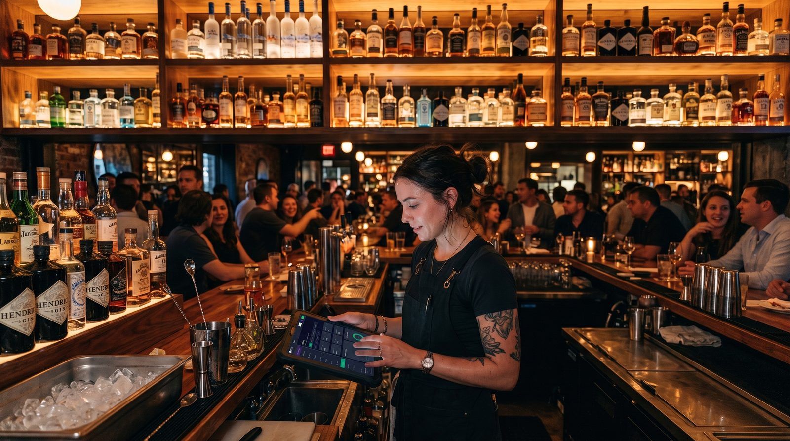

Best Bar POS System in 2026: Open Tabs, Happy Hour & Fast Service
A bar lives and dies by the speed of the till and the discipline of the tab. The right point-of-sale system keeps drinks flowing, keeps every running tab straight across a crowded bar, and flips to happy-hour pricing without a single bartender doing mental arithmetic. This guide walks through the features that actually matter in a POS system for bars, and, for UK readers, the same thing under its local name, a pub EPOS or pub till system, then names the all-rounder we'd start with. No hype, just the trade-offs.

What a bar POS really does
A bar point-of-sale system is not just a touchscreen cash drawer. Behind a busy bar it has to do three hard things at once: take payments fast at the counter, hold dozens of open tabs straight without mixing them up, and price drinks correctly as happy hour comes and goes. On top of that it tracks which spirits and kegs are running low, gives each bartender their own login, and keeps tips clean at cash-out.
Most modern bar systems run in the cloud on a tablet or a handheld terminal, sync to a dashboard you can open from home the next morning, and connect to a card reader. The job hasn't changed in spirit, pour, ring, settle, but the difference between a good and a bad system shows up at exactly the worst moment: 10pm on a Friday, three deep at the bar, with a card machine in one hand.
Open tabs: the feature that defines a bar POS
If there is one feature that separates a real bar POS from a generic retail till, it is open tabs. A tab is a running bill that a bartender starts for a customer or a table, adds rounds of drinks to all night, and settles in one go when the guest leaves. Get this wrong and you lose money, walked tabs and tempers; get it right and the bar runs itself.
What "good tabs" actually means in practice:
- Name a tab by customer or table, "Sarah", "Table 7", or a bar-stool number, so any bartender can find it in a second.
- Pre-authorise a card to open a tab, so the bar is covered if a guest forgets to close out.
- Any server can pick up any tab, drinks ordered from one bartender and another are added to the same running bill.
- Add rounds fast, re-order the last round with a tap instead of re-keying every drink.
- Split and part-pay at closing, split a table tab evenly, by item, or take three cards and one cash on the same bill.
- Customer credit, let trusted regulars or account customers run a longer-term tab you settle later.
This is where a lot of cheap or general-purpose tills fall down: tabs are an afterthought, locked to one bartender, or sold as a paid add-on. For a bar, tab and customer-credit management isn't a nice-to-have, it's the core of the job, and it should be built in, not bolted on.
Features that actually matter behind the bar
Ignore the 200-item feature checklists vendors love. For most bars and pubs, these are the ones that change your night:
Fast counter service
The core job. Ringing up a pint and a shot should take a couple of taps, work one-handed, and never freeze mid-queue. Favourite drinks pinned to the front screen and one-tap rounds save real seconds per order, and seconds add up fast when the bar is three deep.
Happy hour and multiple price levels
A bar POS should switch to happy-hour pricing automatically on a schedule, so a cocktail rings up at its discounted price between 5 and 7pm and snaps back at 7:01 with no staff doing the math. Multiple price levels go further: the same product list can carry a bar price, a lounge price and an events price, so you're never maintaining three menus.
Rounds and split payments
Bar maths is round-based. Re-ordering "the same again" should be one tap, and at closing the bill needs to split cleanly, evenly across a group, by item, or across several cards and cash at once. Clumsy splitting is one of the biggest hidden time-sinks at a busy bar.
Drink stock and pour control
You can't manage what you can't see. Tracking spirits, bottles and kegs, with low-stock alerts before you run dry mid-shift, protects your margin and stops the dreaded "we're out" at peak. Deeper pour-cost tracking is worth switching on once volume justifies it.
Multiple servers and permissions
Every bartender needs their own login, their own sales and tabs, and permissions that match their role, so a new hire can't void a closed tab or open the cash drawer unsupervised. Individual logins also make cash-out and accountability clean at the end of the night.
Tips and gratuity
Tips need to be captured at payment, tracked per server, and totalled for cash-out without a spreadsheet. Auto-gratuity on large tables and clean tip reporting keep the end of the night quick and fair.
Offline mode
If your internet drops mid-service, an offline-capable POS keeps you pouring and ringing up tabs, then syncs everything when the connection returns. Without it, one outage during a Friday rush stops every sale, the most expensive way to learn this lesson.
US "bar POS" vs UK "pub EPOS": same tool, two names
If you're reading from the UK, you'll see this software called a pub EPOS system or a pub till system rather than a "bar POS system", EPOS standing for Electronic Point of Sale. The terminology differs but the job is identical: open tabs, happy-hour price levels, rounds, split bills, drink stock, multiple bar staff and tips. A "bar EPOS" in Manchester and a "bar POS" in Miami are solving exactly the same Friday-night problem. Whichever name your search uses, judge the system on the same shortlist of features above, not on the label.
How to choose: a 6-point checklist
Before you compare brands, get clear on what your bar actually needs. Run through these six questions and write down your answers.
1. How do you serve, counter, table, or both?
A high-volume sports bar lives on counter speed and one-tap rounds. A cocktail lounge or gastropub leans on named tabs, table service and split bills. Many venues need both, so pick a system that does counter and tabs equally well.
2. How central are tabs to your night?
If most of your sales run through open tabs, tab handling is your number-one buying criterion, pre-auth, transfer between bartenders, split and part-pay. Don't compromise here to save a few pounds on a subscription.
3. Do you run happy hour or tiered pricing?
If you run scheduled specials or different prices by area, insist on automatic time-based price levels. Manual discounting at the till is slow and error-prone when it's busy.
4. How many staff, and what can each one do?
More than one bartender means you need individual logins, per-server reporting and role permissions as standard, not as a premium tier.
5. Do you need offline mode?
If a dropped connection would stop service, offline mode with auto-sync is non-negotiable. Test it works before you commit.
6. What will it really cost over 12 months?
Don't compare the "free" or "£49/month" sticker. Compare software + card processing + hardware + paid add-ons across a full year. Processing fees usually dwarf the subscription, that's the number that tells the truth.
Our top pick for bars and pubs
POS pricing has two layers, and bar owners routinely focus on the wrong one. The visible layer is the software subscription. The bigger, quieter layer is card processing, and several "free" apps force you onto their own processor, so the commission is non-negotiable and, over a busy bar's year, dwarfs any subscription. The smartest question isn't "how much is the app?" It's "do you force a payment commission, or can I keep control of my card sales?"
digabloPos
For bar and pub owners who want to start lean and stay in control of their costs, digabloPos is the strongest all-rounder. The base plan is free forever (no time limit, no credit card), and you're ringing up your first round in about 5 minutes. Its standout for bars: open tabs and customer-credit management built in, name a tab by customer or table, add rounds across the night, hand it between bartenders and split it at closing, plus fast counter checkout, true offline mode with automatic sync, and pay-as-you-grow modules for happy-hour price levels, drink stock and loyalty you switch on only when you need them.
Why bars trust it
👍 Strengths
- Free forever, no credit card, live in ~5 min
- Fast counter checkout for high-volume service
- Open tabs & customer-credit management built in
- True offline mode with auto-sync
- Modules for happy hour, stock & loyalty as you grow
- Multiple servers with their own logins
- Ready for e-invoicing / electronic invoicing
👎 Notes
- Newer brand than the US and UK giants
- Some advanced modules are paid
- You arrange your own card reader/processor
Want to test it behind your own bar?
Set up a real, working till with open tabs in about 5 minutes. Free forever, no credit card.
Create my free bar till, 5 minComparison table
How the most-recommended bar systems line up on the features that matter behind the bar. Treat any pricing as a starting point, it changes often and varies by country, plan and contract.
| Criterion | digabloPos | Square for Bars | Toast | TouchBistro | Epos Now |
|---|---|---|---|---|---|
| Free plan | Yes (forever) | Free tier | Free Starter* | Paid | Paid |
| Open tabs built in | Yes | Yes | Yes | Yes | Yes |
| Happy-hour price levels | Yes (module) | Scheduled | Yes | Yes | Yes |
| Split payments / rounds | Yes | Yes | Yes | Yes | Yes |
| Card processing | Keep control of yours | Own processor | Own processor | Via partner | Via partner |
| Offline mode | Yes | Partial | Partial | Yes | Partial |
| Setup time | ~5 min | Fast | Onboarding | Onboarding | Onboarding |
*Free or starter tiers come with conditions (higher processing rates, paid add-ons, or hardware requirements). Information checked June 2026 against official product pages and specialist comparison sites. Vendor features and pricing change frequently and vary by country, plan and contract, always confirm current details on each official site before deciding.
How the well-known options stack up
Square for Bars is the easy default: a usable free tier with bar tabs, scheduled happy-hour discounts and auto-gratuity, but the model rests on Square's own card processing. Toast is purpose-built for high-volume bars and nightclubs with strong tab handling and pour-cost analytics, sold with restaurant-grade pricing and its own processor. TouchBistro handles tabs, transfers and time-based specials well and runs reliably offline, at a paid monthly price. In the UK, Epos Now is one of the most widely deployed pub EPOS systems, while ICRTouch and Goodtill by SumUp are common pub till choices, all paid, and most tying you to a processing partner. The thread running through the big names: tabs are covered, but you're usually locked into the vendor's payment processing.
5 mistakes bar owners make
- Judging by the subscription alone. A "free" app that forces a commission on every card sale can cost a busy bar far more than a paid plan with cheaper processing. Always compare the 12-month total.
- Treating tabs as an afterthought. If open tabs, transfers and split payments are clumsy in the demo, they'll be chaos on a Saturday. Test the shift-change flow before you buy.
- Discounting happy hour by hand. Manual specials are slow and leak money. Insist on automatic, scheduled price levels.
- Skipping offline mode. One dropped connection during peak teaches this lesson the expensive way. Confirm it works before you commit.
- Over-buying on day one. You don't need deep pour-cost analytics, loyalty and three price tiers immediately. Start lean and switch modules on when the need is real.
Ready to pour your first round?
Create a free bar till with open tabs in about 5 minutes, no commitment, no credit card, and you stay in control of your card processing.
Create my free bar till, 5 minFAQ
What is the best POS system for a bar in 2026?
There's no single winner for every venue, it depends on your service style and volume. If you want to start free and stay in control of your costs, a free-forever system with fast counter checkout, true open-tabs management, happy-hour price levels and offline mode is the strongest all-round pick. A cocktail bar leans on tabs and split payments; a high-volume sports pub leans on speed and multiple servers.
How do open tabs work on a bar POS system?
An open tab lets a bartender start a running bill for a customer or table, add rounds of drinks through the night, and settle it all at once when the guest leaves. A good bar POS lets any server pick up an existing tab, name it by customer or table, transfer it between staff, and split or part-pay it at closing. Systems with customer credit and tab management built in handle this without add-ons.
What is the difference between a bar POS system and a pub EPOS system?
They're the same thing under different names. In the US the term is "bar POS system" or "POS system for bars"; in the UK the same software is usually called a "pub EPOS" or "pub till system". The features bars and pubs need, open tabs, happy-hour pricing, rounds, split bills, drink stock and tips, are identical on both sides of the Atlantic.
Can a bar POS handle happy hour and multiple price levels?
The good ones do. You set time-based price levels so a pint or cocktail automatically switches to its happy-hour price during the scheduled window and back afterwards, with no staff math. Multiple price levels also let you run different prices for the bar, the lounge or events from the same product list.
Does a bar POS system work offline?
The best ones do. With true offline mode you keep pouring and ringing up tabs even if the internet drops mid-service, and everything syncs automatically when you reconnect, essential during a Friday-night rush when a dropped connection would otherwise stop every sale.